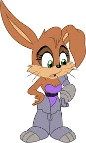

About Sonic
Sonic is the greatest character to ever grace our screens. In fact, the only character that even comes close would be Bunnie Rabbot, who is a part of the Sonic franchise anyway.
Bunnie Rabbot, the character who is just as badass as Sonic
Sonic and Bunnie's attributes
- Sonic is super fast
- Bunnie is part robot and has super strength
- Sonic and Bunnie are badass for completely different reasons
Sonic's friends
Sonic has many different friends. I think some of his friends are also badass. his best friends are from the cartoon series. Click the links below to see more about them: